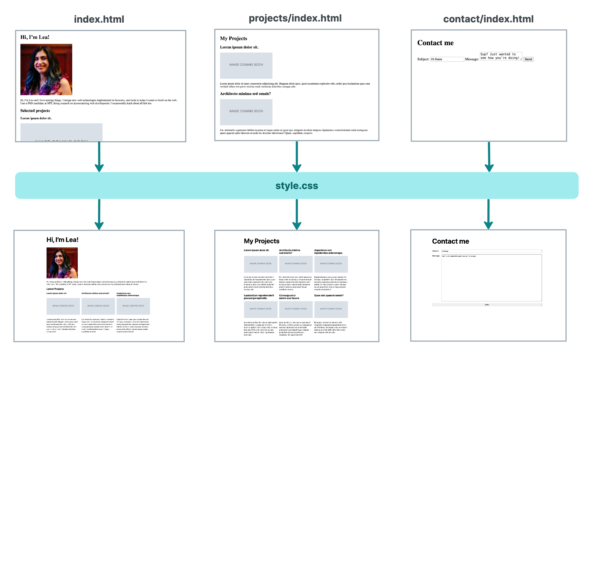

Lab 4
Javascript II
DSC 106: Data Visualization
Component-driven development
Traditional Architecture




Components give us a *different* separation of concerns than what we have seen so far
(and arguably more pragmatic and scalable).
Basic Example Structure in JavaScript Modules
üìÇ File Structure:
index.html
main.js
modules/
canvas.js
square.js
üìå canvas.js ‚Äî Handles Canvas Setup
function create(parent, width, height, id) {
let wrapper = document.createElement("div");
wrapper.id = id;
let canvas = document.createElement("canvas");
canvas.width = width;
canvas.height = height;
wrapper.appendChild(canvas);
parent.appendChild(wrapper);
return { context: canvas.getContext("2d"), id };
}
function createReportList(wrapperId) {
let list = document.createElement("ul");
document.getElementById(wrapperId).appendChild(list);
return list.id;
}
üìå square.js ‚Äî Handles Square Operations
const name = "square";
function draw(context, x, y, size, color) {
context.fillStyle = color;
context.fillRect(x, y, size, size);
return { size, x, y, color };
}
function reportArea(listId, length) {
let list = document.getElementById(listId);
let item = document.createElement("li");
item.textContent = `Square area: ${length * length}`;
list.appendChild(item);
}
function reportPerimeter(listId, length) {
let list = document.getElementById(listId);
let item = document.createElement("li");
item.textContent = `Square perimeter: ${length * 4}`;
list.appendChild(item);
}
üìå main.js ‚Äî Bringing It All Together
import { create, createReportList } from "./modules/canvas.js";
import { draw, reportArea, reportPerimeter } from "./modules/square.js";
const parent = document.body;
const { context, id } = create(parent, 400, 400, "canvas-wrapper");
const listId = createReportList(id);
let square = draw(context, 50, 50, 100, "blue");
reportArea(listId, square.size);
reportPerimeter(listId, square.size);
This slide explains the basic modular file structure of a JavaScript project.
- `canvas.js` handles canvas setup and creates report lists.
- `square.js` handles drawing squares and calculating their area/perimeter.
- `main.js` brings it all together by importing functions and executing them.
This modular approach improves maintainability, readability, and reusability.
Exporting Module Features in JavaScript
üìå Exporting Individual Features
export const name = "square";
export function draw(ctx, length, x, y, color) {
ctx.fillStyle = color;
ctx.fillRect(x, y, length, length);
return { length, x, y, color };
}
✅ You can export:
- Functions
- Variables (var, let, const)
- Classes (not inside a function)
❌ Exporting inside a function is not allowed
function example() {
export const invalid = "Can't export here"; ❌ This would throw an error
}
üìå Exporting Multiple Features at Once
function reportArea(length) {
return `Square area: ${length * length}`;
}
function reportPerimeter(length) {
return `Square perimeter: ${length * 4}`;
}
export { name, draw, reportArea, reportPerimeter };
To use JavaScript modules, we **export** features from a module file using the `export` statement.
- You can **export each feature individually** (`export function draw(...)`).
- You can **export multiple features at once** using `{}` at the end of a file.
- Exports must be **top-level** (not inside functions).
Renaming Imports and Exports in JavaScript
üìå Renaming Exports in a Module
inside module.js
export { function1 as newFunctionName, function2 as anotherNewFunctionName };
üìå Renaming Imports in main.js
import { newFunctionName, anotherNewFunctionName } from "./modules/module.js";
✅ Alternative Way: Renaming During Import
inside module.js
export { function1, function2 };
inside main.js
import { function1 as newFunctionName, function2 as anotherNewFunctionName } from "./modules/module.js";
üìå Handling Name Collisions Across Multiple Modules
Importing without renaming would cause a conflict
import { name, draw, reportArea, reportPerimeter } from "./modules/square.js";
import { name, draw, reportArea, reportPerimeter } from "./modules/circle.js"; ❌ Error: Redeclaration
import { name, draw, reportArea, reportPerimeter } from "./modules/triangle.js"; ❌ Error: Redeclaration
✅ Correct Approach: Rename Imports to Avoid Conflicts
import {
name as squareName, draw as drawSquare,
reportArea as reportSquareArea, reportPerimeter as reportSquarePerimeter
} from "./modules/square.js";
import {
name as circleName, draw as drawCircle,
reportArea as reportCircleArea, reportPerimeter as reportCirclePerimeter
} from "./modules/circle.js";
import {
name as triangleName, draw as drawTriangle,
reportArea as reportTriangleArea, reportPerimeter as reportTrianglePerimeter
} from "./modules/triangle.js";
üìå Alternative: Renaming at the Export Level
in square.js
export {
name as squareName, draw as drawSquare,
reportArea as reportSquareArea, reportPerimeter as reportSquarePerimeter
};
in main.js (No need for renaming now)
import { squareName, drawSquare, reportSquareArea,
reportSquarePerimeter } from "./modules/square.js";
Renaming imports and exports is useful to **avoid naming conflicts** when working with multiple modules.
- You can rename exports **inside the module** (`export { function1 as newFunctionName }`).
- You can rename **during import** (`import { function1 as newFunctionName }`).
- The best approach is usually to **rename during import**, as it avoids modifying the module code, which is useful when importing third-party modules.
Creating a Module Object in JavaScript
üìå Importing Everything as a Module Object
import * as Module from "./modules/module.js";
✅ Now, you can access functions as object properties
Module.function1();
Module.function2();
üìå Applying This to a Real Example
Exports in each module remain simple
export { name, draw, reportArea, reportPerimeter };
üìå Importing Multiple Modules as Objects
import * as Canvas from "./modules/canvas.js";
import * as Square from "./modules/square.js";
import * as Circle from "./modules/circle.js";
import * as Triangle from "./modules/triangle.js";
✅ Now, use the module's functions under its namespace
const square1 = Square.draw(myCanvas.ctx, 50, 50, 100, "blue");
Square.reportArea(square1.length, reportList);
Square.reportPerimeter(square1.length, reportList);
Instead of importing multiple functions individually, we can **import an entire module as an object**.
- This keeps our imports **cleaner** and **more structured**.
- Instead of calling `draw()`, we now use `Square.draw()`—this **prevents name conflicts**.
- This approach is useful when handling **multiple related modules** in a project.
Modules and Classes in JavaScript
üìå Defining a Class in a Module (square.js)
class Square {
constructor(ctx, listId, length, x, y, color) {
this.ctx = ctx;
this.listId = listId;
this.length = length;
this.x = x;
this.y = y;
this.color = color;
}
draw() {
this.ctx.fillStyle = this.color;
this.ctx.fillRect(this.x, this.y, this.length, this.length);
}
reportArea() {
console.log(`Square area: ${this.length * this.length}`);
}
reportPerimeter() {
console.log(`Square perimeter: ${this.length * 4}`);
}
}
üìå Exporting the Class
export { Square };
üìå Importing the Class in main.js
import { Square } from "./modules/square.js";
✅ Using the Class to Create and Draw a Square
const square1 = new Square(myCanvas.ctx, myCanvas.listId, 50, 50, 100, "blue");
square1.draw();
square1.reportArea();
square1.reportPerimeter();
Instead of exporting individual functions, we can **use ES6 classes** inside modules.
- This approach is useful when working in an **object-oriented** style.
- The `Square` class encapsulates **both state and behavior** related to a square.
- By importing `Square`, we can create multiple instances, making our code **more reusable**.
Aggregating Modules in JavaScript
üìå Aggregating Modules Using Export
export * from "x.js";
export { name } from "x.js";
üìå Example: Module Structure
modules/
canvas.js
shapes.js
shapes/
circle.js
square.js
triangle.js
üìå Exporting from Individual Submodules
In square.js, circle.js, and triangle.js:
export { Square };
export { Circle };
export { Triangle };
üìå Aggregating Modules in shapes.js
export { Square } from "./shapes/square.js";
export { Triangle } from "./shapes/triangle.js";
export { Circle } from "./shapes/circle.js";
✅ Using the Aggregated Module in main.js
Before (multiple imports)
import { Square } from "./modules/square.js";
import { Circle } from "./modules/circle.js";
import { Triangle } from "./modules/triangle.js";
After (single import)
import { Square, Circle, Triangle } from "./modules/shapes.js";
Instead of importing multiple submodules separately, we can **aggregate them** into a single parent module.
- `shapes.js` acts as a **wrapper** that re-exports everything from `square.js`, `circle.js`, and `triangle.js`.
- This keeps our **imports cleaner** and **reduces complexity**.
- The exports in `shapes.js` are **redirects** and cannot contain additional logic.
Dynamic Module Loading in JavaScript
üìå Dynamically Importing a Module
import("./modules/myModule.js").then((module) => {
Do something with the module.
});
✅ Dynamic Imports are Useful for:
- Loading modules only when needed (performance boost)
- Keeping initial script lightweight
- Importing in non-module scripts
- Avoiding unnecessary network requests
üìå Example: Loading Modules on Button Click
Get reference to button
const squareBtn = document.querySelector(".square");
Attach event listener for dynamic import
squareBtn.addEventListener("click", () => {
import("./modules/square.js").then((Module) => {
const square1 = new Module.Square(
myCanvas.ctx, myCanvas.listId, 50, 50, 100, "blue"
);
square1.draw();
square1.reportArea();
square1.reportPerimeter();
});
});
✅ Why Use Dynamic Imports?
- Modules are only loaded when needed (e.g., button click)
- Reduces initial load time of the webpage
- Prevents loading unused code
Dynamic module loading allows JavaScript to **import modules on demand**, improving performance by **loading only what is needed**.
- The `import()` function **returns a Promise** that resolves with a module object.
- Dynamic imports **work even in non-module scripts**, unlike static `import` statements.
- This technique is useful for **lazy loading features**, **reducing network requests**, and **keeping code modular**.
Reactivity

If you’ve used a spreadsheet, you already know what reactivity is.
The core idea of reactivity is that when a value changes, all dependent values are updated automatically.
CSS is reactive
As we have already seen, CSS is reactive.
For example, if we update a CSS variable via JS, everything that depends on it (including other variables) is updated automatically.
JS is not reactive
a:hover {
background: gold;
}
<a href="#">Come here</a>
<a href="#"
onmouseover="this.style.background = 'gold';"
>Come here</a>
<a href="#"
onmouseover="this.style.background = 'gold';"
onmouseout="this.style.background = '';"
>Come here</a>
Remember this? As a part of CSS pseudo-classes are reactive:
not only does the background here become `gold` when the link is hovered,
but it also returns to its previous state automatically, when the link stops being hovered.
However, when we use JS to do the same thing, we have to manually set the background back to its original value ourselves.
Implenting reactivity is hard
<input type="number" id="input_a"> +
<input type="number" id="input_b"> =
<input type="number" id="input_c" disabled>
Reactivity with vanilla JS
let a = 1, b = 2, c;
input_a.value = a;
input_b.value = b;
input_a.addEventListener("input", e => {
a = Number(input_a.value);
updateC();
});
input_b.addEventListener("input", e => {
b = Number(input_b.value);
updateC();
});
function updateC() {
c = a + b;
input_c.value = c;
}
updateC();
The naîve approach to implementing reactivity ourselves is to add event listeners to everything that could possibly change,
and update everything that may have been affected.
This gets very complicated very fast, since we need to keep track of all the dependencies and update them all manually.
[Live demo](https://codepen.io/leaverou/pen/OJGMyvQ)
Reactivity with vanilla JS Part 2
let a = 1, b = 2, c;
input_a.value = a;
input_b.value = b;
function render() {
a = Number(input_a.value);
b = Number(input_b.value);
c = a + b;
input_c.value = c;
}
render();
input_a.addEventListener("input", render);
input_b.addEventListener("input", render);
document.body.addEventListener("input", render);
Because this is so tedious, what we end up doing instead is is bunching updates together
and updating more things than we need to, often everything at once with a single function.
Then, every time anything updates, we call that single function and update *everything*.
With that approach, we could even listen to the `input` event on an ancestor, since it [*bubbles*](https://developer.mozilla.org/en-US/docs/Learn/JavaScript/Building_blocks/Events#event_bubbling),
a practice known as [event delegation](https://developer.mozilla.org/en-US/docs/Learn/JavaScript/Building_blocks/Events#event_delegation).
However, the more complex the app, the slower this practice becomes, as we are updating more than we need to.
Also, this makees it impossible to implement *two-way binding*, i.e. also update the input when the value changes, not just the other way around.
[Live demo](https://codepen.io/leaverou/pen/OJGMydE)
Reactivity boils down to recalculation

There is one clear theme in both previous examples:
Implementing reactivity boils down to recalculating things.
The tricky bit is knowing *what* to recalculate and *when*.
The what is typically implemented with a [*dependency graph*](https://en.wikipedia.org/wiki/Dependency_graph).
When a value changes, we recalculate everything that depends on it, and everything that depends on those, and so on.
The when is typically implemented with *events* when it’s about updating data from user actions,
and [accessors](https://developer.mozilla.org/en-US/docs/Web/JavaScript/Reference/Operators/Property_accessors) and [proxies](https://developer.mozilla.org/en-US/docs/Web/JavaScript/Reference/Global_Objects/Proxy) when it's about updating the UI from data.
What is a Web API?
APIs are for programs
{
"id": "cuisine-of-nepal-san-francisco",
"name": "Cuisine of Nepal",
"image_url": ...,
"is_closed": false,
"url": ...,
"review_count": 303,
"categories": [...],
"rating": 4.5,
"coordinates": {...},
"transactions": [
"delivery",
"pickup",
"restaurant_reservation"
],
"price": "$$",
"location": {...},
"phone": "+14156472222",
"display_phone": "(415) 647-2222",
"distance": 2502.5961202999997,
"attributes": {
"gender_neutral_restrooms": true
},
"data": {
"reservation_openings": [
"13:30",
"13:45",
"14:00"
]
}
},
Async values
let response = await fetch("https://api.github.com/users/giorgianicolaou");
let json = await response.json();
// Do stuff with json
fetch("https://api.github.com/users/giorgianicolaou")
.then(response => response.json())
.then(json => {
// Do stuff with json
});
Many functions in JS cannot return a result within a reasonable amount of time.
For example, [`fetch()`](https://developer.mozilla.org/en-US/docs/Web/API/fetch) sends an arbitrary HTTP request and reads the response. This can take a long time.
To avoid blocking execution, we use *asynchronous* functions, which return a [*promise*](https://developer.mozilla.org/en-US/docs/Web/JavaScript/Guide/Using_promises)
which will eventually have the value we want.
In fact, using `fetch()` involves two promises: one for the response, and one for the JSON data.
Using Async and Await
async function fetchUserData() {
try {
const response = await fetch("https://api.github.com/users/giorgianicolaou");
const user = await response.json();
console.log("User data:", user);
const reposResponse = await fetch(user.repos_url);
const repos = await reposResponse.json();
console.log("Repositories:", repos);
} catch (error) {
console.error("Error:", error);
}
}
fetchUserData();